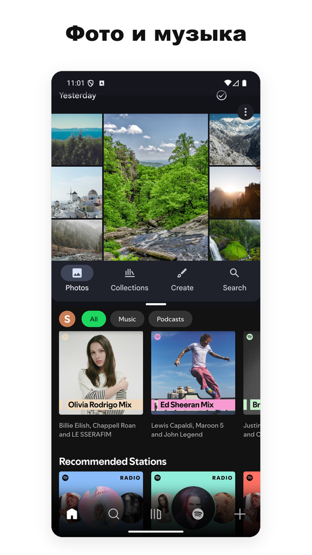
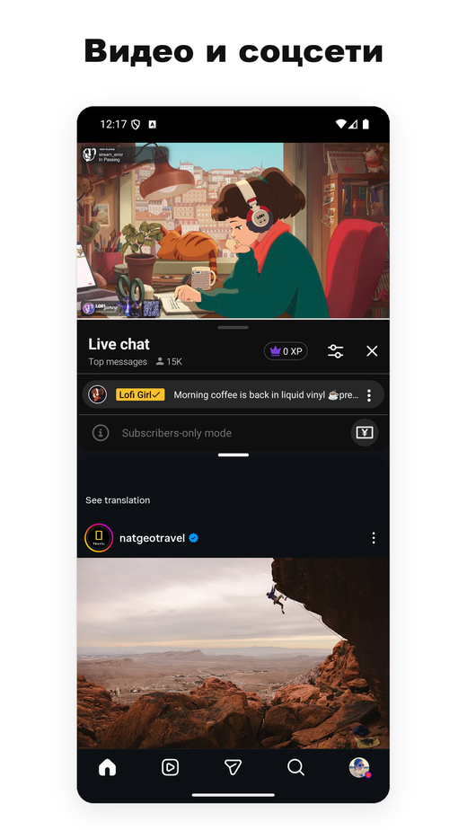
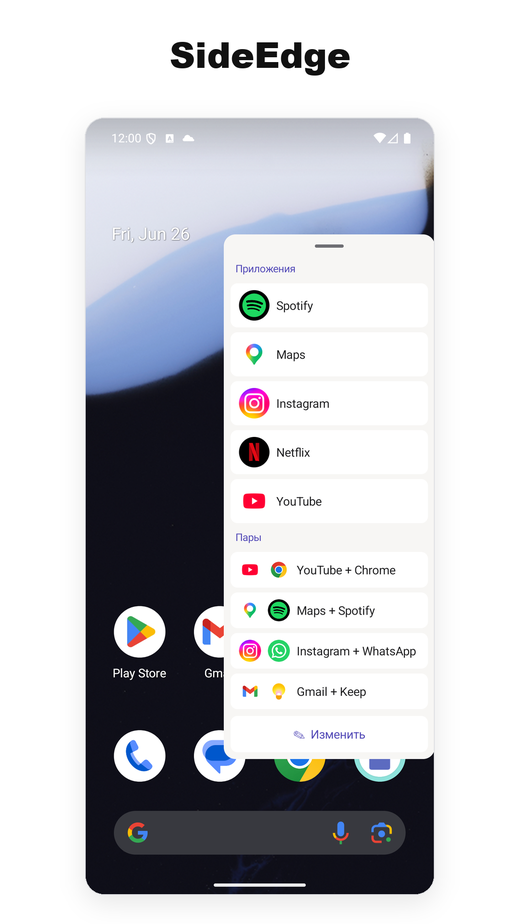
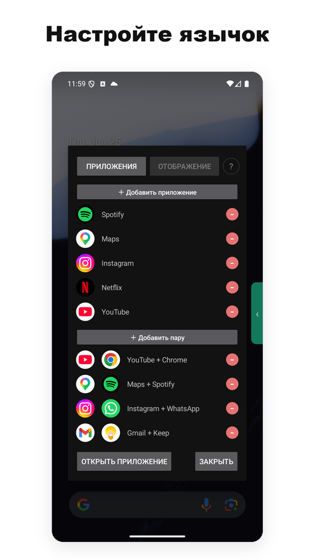

- Одна из немногих утилит разделённого экрана для Android, которая надёжно работает на Android 15, 16 и 17.
- Большинство конкурентов перестали работать, когда Google изменила внутренние API; мы продолжали выпускать обновления на каждом свежем переходе ОС.
- Без рекламы, доступ в интернет не требуется. Основной части разделённого экрана на Android 12L+ не нужна служба спец. возможностей; необязательная боковая панель SideEdge использует её лишь для того, чтобы прятать свою ручку на экранах входа и ввода пароля. Лёгкое, без фоновых служб.
- Бесплатного плана достаточно для основной работы. Подписка Pro стоит около $1 в месяц — примерно в 10 раз дешевле ближайшего платного конкурента.
- Встроенный App Pair на смартфонах — это по сути фишка только Samsung: Android 15 добавила её на уровне ОС, но только для устройств с большим экраном, оставив за бортом смартфоны Pixel (и все остальные не-Samsung смартфоны).
- Если вы на Pixel и скучаете по App Pair из Galaxy — это самая близкая замена из всех, что мы видели.
- Контекст: почему «App Pair» важен на Android
- Что на самом деле делает Split Screen Launcher
- SideEdge — запуск пар с любого экрана
- Альтернатива Samsung App Pair для Pixel
- Проблема Android 15/16 — и почему большинство конкурентов перестали работать
- Разрешения и приватность
- Сравнение с другими приложениями разделённого экрана
- Цена
- Для кого это приложение (и кому оно не нужно)
- Итог
1. Контекст: почему «App Pair» важен на Android
Android поддерживает многозадачность в разделённом экране начиная с версии 7.0 (Nougat, 2016). Но на уровне ОС он никогда не поддерживал сохранение комбинаций из двух приложений и их совместный запуск. Samsung добавила это в One UI как «App Pair» ещё в 2017 году, и те, кто переходит с Galaxy на Pixel, почти сразу замечают отсутствие этой функции.
Обходной путь — поставить сторонний лончер, который автоматизирует два шага: открыть приложение A, затем открыть приложение B в соседнем окне. В Google Play таких десятки, но экосистема запутаннее, чем кажется: каждая версия Android меняет способ вызова разделённого экрана, и большинство таких приложений не обновляются.
В Android 15 (2024) Google наконец добавила собственную функцию App Pair на уровне ОС — но ограничила её только устройствами с большим экраном. Pixel Tablet её получил; Pixel 9 Pro — нет. По состоянию на середину 2026 года расклад на смартфонах выглядит так:
- Samsung Galaxy — встроенный App Pair с 2017 года (через панель Edge)
- Pixel (обычные модели, не Tablet и не Fold) — нет
- Xiaomi, OnePlus, Oppo, Realme, Vivo, Motorola, Nokia, Sony, ASUS — нет
Получается, что на смартфонах встроенный App Pair — фактически фишка только Samsung. Всем остальным остаётся либо штатный ручной разделённый экран Android (открыть приложение, долгое нажатие в недавних, перетащить, повторить), либо сторонний лончер вроде нашего.
Альтернатива Samsung App Pair для Pixel и стокового Android
Если вы перешли со смартфона Galaxy на Pixel — или на любой смартфон со стоковым Android — и ищете альтернативу Samsung App Pair, то именно этот пробел мы и создавали Split Screen Launcher закрыть. Вы получаете то же поведение «запустить оба приложения бок о бок одним нажатием», и для этого не нужны ни устройство Samsung, ни панель Edge.
Это также один из немногих вариантов, который по-прежнему остаётся приложением разделённого экрана, работающим на Android 15, 16 и 17 — без рекламы, без трекинговых SDK и без разрешения спец. возможностей для основы разделённого экрана на Android 12L и новее (необязательная боковая панель SideEdge — единственное исключение). Большинство старых инструментов для пар приложений опираются на системные ярлыки, которые свежие версии Android закрыли (почему — разбираем в разделе 3 ниже); этот же попадает в разделённый экран по пути, который мы поддерживаем рабочим на каждом обновлении ОС.
2. Что на самом деле делает Split Screen Launcher
Split Screen Launcher — утилита с единственной задачей. Выбираешь два приложения, даёшь паре имя («Дорога», «Работа», «YouTube + Instagram»), и пара появляется строкой в приложении. Нажатие на неё открывает оба приложения бок о бок.


По сути, это весь набор функций. Ни встроенного браузера, ни плавающих виджетов, ни интеграции в панель уведомлений. Приложение лёгкое — всего несколько мегабайт — и ничего не делает в фоне.
Примеры пар, которые мы использовали при тестировании:
- Google Карты + Spotify — за рулём
- YouTube + Instagram — второй экран
- Chrome + Google Keep — ресёрч с заметками
- Gmail + Slack — разбор рабочих сообщений
- Калькулятор + Chrome — сравнение цен между вкладками
Один сценарий, которого мы не ожидали, — автомобиль. Пользователь рассказал нам, что запускает Split Screen Launcher на автомобильном головном устройстве (Head Unit) с Android в своей машине, объединяя Карты + Spotify для навигации с музыкой — и переключаясь на Карты + Netflix для того, кто сидит на пассажирском месте. Поскольку запуск пары — это одно нажатие, это подходит автомобильной магнитоле куда лучше, чем долгие нажатия в меню недавних.
Запускайте пары автоматически — MacroDroid, Automate, Tasker
Ещё один неожиданный сценарий пришёл совершенно из другой области — мотоцикл. Пользователь, установивший приложение на планшет, закреплённый на руле, хотел, чтобы его автоматизация в MacroDroid самостоятельно открывала сохранённую пару — макрос, запускаемый при включении зажигания и открывающий разделение во время езды, без касания экрана. Этот запрос стал функцией. Начиная с версии 3.0.4, MacroDroid может запускать сохранённую пару через стандартный выбор ярлыков Android — и макрос запускает разделение так же, как и любое другое действие. Другие инструменты автоматизации вроде Tasker или Automate мы индивидуально не тестировали, но поскольку функция опирается на этот стандартный механизм Android, а не на что-то приложение-специфичное, они должны работать так же. Это Pro-функция, строго ограниченная запуском заранее сохранённых пар. Тем, кто не пользуется инструментами автоматизации, она не понадобится — но для тех, кто работает без рук и в дороге, она закрывает разрыв между «одно нажатие» и «ноль нажатий».
Настройка в MacroDroid
- В своём макросе добавьте Action → Applications → Launch Shortcut.
- В списке "Select Shortcut" выберите Split Screen.
- Выберите конкретную сохранённую пару, которую хотите запустить.
- Привяжите к любому триггеру на ваш выбор — подключение Bluetooth-устройства, подключение зарядки или время суток.
Готово. Когда триггер срабатывает, пара открывается полностью сама по себе. Например, можно настроить так, чтобы датчик давления в шинах и приложение для звонков запускались в момент, когда заводится двигатель, или чтобы навигация и музыкальное приложение появлялись, как только телефон подключается к Bluetooth автомобиля.


Резервное копирование и экспорт
Одна деталь, которую легко упустить, но которую стоит выделить: данные пар можно экспортировать в резервный файл. Звучит мелочно, но несколько конкурентов в этой категории держат пары в приватном хранилище приложения без пути экспорта — смена телефона означает восстановление каждой пары вручную. Мы сделали резервное копирование/восстановление полноценной функцией именно для того, чтобы миграция с Pixel на Pixel восстанавливала весь набор за секунды.
Чистый домашний экран
Стоит заранее озвучить ещё одно проектное решение: по умолчанию пары живут внутри приложения — иконки на домашнем экране не создаются. Причина частично в простоте (домашний экран не забивается иконками пар), частично в архитектуре — приложение не привязано к конкретному лончеру (Pixel, Nova и т. д.). Как сказано в разделе 3, именно лончеры, опирающиеся на ярлыки, чаще всего ломаются при переходах к Android 15 и 16; оставаться внутри приложения делает миграцию между устройствами более гладкой.
Дополнительное действие «закрепить на рабочем столе» позволяет пользователям Pro запускать пару одним нажатием прямо с домашнего экрана. Мы хотели сохранить исходный курс «держим домашний экран простым» и при этом ответить на запрос «хочу запускать разделение прямо с иконки на рабочем столе». На иконке, отображаемой на рабочем столе, две иконки приложений уложены вертикально друг над другом, чтобы пара визуально отличалась от обычных иконок лончера.
SideEdge — запуск пар с любого экрана
В версии 3.0 добавлен SideEdge: выдвижная боковая панель, которую вы вытягиваете движением от края экрана. В ней перечислены ваши сохранённые пары и отдельные приложения, так что запустить разделение — или сразу перейти к одному приложению — можно с любого экрана, не возвращаясь сначала на домашний.
Если вы пришли со смартфона Galaxy, эта часть покажется вам знакомой. Панель Edge Panel от Samsung — то, как многие запускали App Pair в One UI: вкладка сбоку экрана, из которой выдвигается лоток с ярлыками. SideEdge — наше прочтение этой идеи, перенесённое на любой Android-смартфон или планшет. Это не полная замена версии Samsung, но она даёт похожий опыт — и, как и всё остальное в приложении, без рекламы. Если вы искали альтернативу Edge Panel на Pixel или стоковом Android, это один из самых близких вариантов, что нам встречались.


Плавающая ручка поверх экрана входа или ввода пароля помешала бы вам печатать в нём. Поэтому SideEdge использует службу спец. возможностей для одной узкой задачи — распознать такие защищённые экраны и убрать ручку с дороги, чтобы вы могли вводить текст, а затем вернуть её, когда вы закончите. Она никогда не читает, не собирает и не передаёт содержимое экрана. Подробности — в разделе Разрешения и приватность ниже.
Для кого это приложение (и кому оно не нужно)
Прежде чем погрузиться в техническую часть — краткая проверка на совместимость с вашим сценарием, чтобы решить, стоит ли читать дальше.
Подойдёт, если вы…
- Регулярно используете одну и ту же пару приложений вместе (карты + музыка, почта + чат)
- На Pixel или стоковом Android и скучаете по App Pair от Samsung
- Предпочитаете приложения без рекламы и трекинговых SDK
- Используете Android 12L или новее (для основы разделённого экрана разрешение спец. возможностей не нужно; его использует только SideEdge)
- Хотите что-то, что не ломается при смене версии ОС
Пропустите, если вы…
- В принципе редко пользуетесь разделённым экраном
- Хотите плавающий виджет, запуск жестом или расширенную автоматизацию (выходящую за пределы запуска сохранённой пары)
- У вас Samsung — встроенный App Pair в One UI и так отличный
- Используете сильно модифицированную фирменную оболочку Android (MIUI/HyperOS, OxygenOS, ColorOS, MagicOS, EMUI/HarmonyOS) — эти производители вносят свои правки во внутреннюю реализацию разделённого экрана, поэтому поведение на таких прошивках не гарантируется
Всё ещё интересно? Дальше идёт технический контекст — почему Android 15 и 16 привели к неработоспособности большинства альтернатив и какие проектные решения стоят за нашим подходом.
3. Проблема Android 15/16 — и почему большинство конкурентов перестали работать
Это самая интересная часть и причина, по которой большая часть конкурирующих приложений перестала работать.
Исторически лончеры разделённого экрана опирались на горстку системных API, которые Google постепенно сужала или убирала. Каждый новый релиз Android отрезал у сторонних приложений очередной способ запустить два приложения рядом. Android 15 и 16 закрыли самые распространённые маршруты. Обходные пути на уровне shell ломаются схоже.
Проще говоря: «хитрости», которыми сторонние приложения переводили телефон в режим разделения, больше не работают на Android 15 и 16. Большинство приложений этой категории так и не выпустили исправление.
Split Screen Launcher надёжно попадает в разделённый экран на Android 15, 16 и новом Android 17 по другому пути. Точный механизм мы оставляем при себе — найти комбинацию, работающую на разных версиях ОС, стоило немалого перебора, и публикация рецепта фактически означала бы передачу его всем сломавшимся конкурентам. Что мы можем сказать: наша история релизов отражает активное сопровождение через переходы Android 12, 12L, 14, 15, 16 и 17, и мы намерены сохранять этот ритм.
android:resizeableActivity="false" — стоковая камера и Google Files самые известные — и вместо того, чтобы образовать пару, они просто открываются сами по себе на полный экран (встроенный App Pair от Samsung ведёт себя так же).
(Обходной путь) Если включить одновременно
Настройки → Система → Параметры разработчика → Изменение размера в многооконном режиме и Разрешить нерастягиваемые приложения в многооконном режиме, эти приложения тоже работают в разделённом экране. В справке внутри приложения («Как использовать приложения с пометкой "Может не работать"») есть пошаговая инструкция.
(Обновление) Свежие версии также корректно обрабатывают несколько приложений, которые раньше сопротивлялись объединению в пару, — в том числе Alexa и Google Calendar, — так что теперь они правильно открываются в разделённом экране.
4. Разрешения и приватность
На Android 12L и новее запуск пары не требует ни runtime-разрешений, ни службы спец. возможностей — основной процесс разделённого экрана полностью опирается на стандартное поведение системы Android. Дополнительный доступ запрашивается только для двух необязательных функций, которые вы сами включаете.
① Автоповорот для отдельной пары (необязательное разрешение) — если вы включаете его для конкретной пары, только тогда приложение запрашивает разрешение «Изменение системных настроек» через стандартный системный диалог. Оно никогда не запрашивается заранее, и вы его не увидите, пока не воспользуетесь этой функцией.
② Включение SideEdge (необязательная функция) — при включении боковой панели используются два разрешения. Первое — «Отображение поверх других приложений», чтобы панель могла появляться поверх любого контента. Второе — служба специальных возможностей, задействованная ради одной узкой, защитной цели: она определяет, когда активен защищённый системный экран — поле входа, менеджер паролей, запрос двухфакторной аутентификации или банковское приложение — и автоматически убирает ручку и панель с дороги, чтобы они никогда не перекрывали конфиденциальный ввод. Она никогда не читает, не собирает и не передаёт содержимое экрана. Оба разрешения остаются неактивными, пока вы не выдадите их явно через системный диалог Android.
На Android 9–12 приложению нужно разрешение на службу спец. возможностей, потому что это единственный доступный API. Карточка в Play Store явно говорит, что служба используется только для запуска режима разделения. Список разрешений, который показывает Google Play, настолько короткий, что помещается на один экран — ни геолокации, ни контактов, ни хранилища и (что особенно заметно) без сети. Для этого угла Play Store это само по себе редкость.
Проще говоря: на старых версиях Android не было официального API для запуска разделённого экрана, поэтому служба спец. возможностей была единственным рабочим путём. Это унаследованное ограничение, а не то, что приложение использует, чтобы читать ваш экран.
Для сравнения: большинство бесплатных приложений разделённого экрана в Play Store тянут за собой рекламные SDK (AdMob, Unity, IronSource) — то есть декларируют разрешение INTERNET и набор трекеров, идущий с ними в комплекте. Мы выбрали монетизацию минимальной подпиской — отчасти чтобы сохранить чистый профиль разрешений, отчасти потому, что вшивание рекламных SDK в столь маленькую утилиту резко раздуло бы её размер.
5. Сравнение с другими приложениями разделённого экрана
Прежде чем показывать таблицу, полезно очертить ландшафт. Функциональность в стиле «App Pair» обычно решается через несколько подходов:
- Реализации конкретных вендоров — App Pair от Samsung (с 2017 года в One UI), а также варианты у Xiaomi, OPPO и старой LG. Работают только на устройствах своего производителя.
- Сторонние утилиты — отдельные приложения, посвящённые этому единственному сценарию. Большинство опирается на системные API, которые в свежих версиях Android были ограничены или удалены, поэтому выбор заметно сократился.
- Подходы на основе автоматизации — Tasker и аналоги позволяют сделать скрипт для запуска в разделении, но используют те же базовые примитивы, что и специализированные приложения, и наследуют те же поломки. К тому же каждую пару пользователю приходится собирать вручную. Начиная с версии 3.0.4, мы добавили прямолинейный способ подключиться к таким инструментам: можно запустить сохранённую пару из MacroDroid (Pro), не составляя разделение вручную. Поскольку функция использует стандартный выбор ярлыков Android, она должна работать и с другими приложениями автоматизации вроде Tasker или Automate — хотя мы их не тестировали досконально.
Сам по себе сторонний сегмент сильно фрагментирован. В Google Play собраны десятки специализированных утилит разделённого экрана, но активность и качество распределены неравномерно.
Самые скачиваемые приложения в этой нише набрали миллионы установок, но лидеры сегмента на удивление слабы: крупнейшее из них сочетает такой большой охват с посредственной оценкой в отзывах, а другая широко распространённая альтернатива в последний раз обновлялась в середине 2025 года и так и не выпустила исправление под изменения API разделённого экрана в Android 15/16. Некоторые другие агрессивно ведут себя с ценой — с дорогими недельными подписками, которые вызывают критику в пользовательских сообществах.
Общие закономерности в этом сегменте: большинство приложений либо перестали обновляться где-то на Android 11–12, либо идут с навязчивыми баннерами или межстраничной рекламой, либо требуют разрешение службы спец. возможностей на всех версиях Android (мы это требование снимаем на Android 12L+). Из-за этого поле выглядит непривычно тонким с точки зрения хорошо поддерживаемых вариантов с минимальными разрешениями.
Маленькому, активно поддерживаемому и полностью без рекламы приложению вроде этого не так уж трудно выделиться — но только при условии, что пользователи его найдут.
6. Цена
Бесплатная версия ограничивает количество сохранённых пар, чтобы пользователь опробовал весь рабочий процесс до того, как решить, подходит ли это его привычкам. Основные функции — создание пар, запуск, резервное копирование/восстановление — работают без оплаты.
Подписка Pro стоит около $1 в месяц в зависимости от региона, снимает ограничение на число пар и добавляет организацию по папкам и настройку цвета иконок. Стандартная подписка Google Play, отменить можно в любой момент.
Для контекста: другие платные утилиты разделённого экрана в той же категории имеют премиум-тарифы в диапазоне от разовой оплаты в несколько долларов до дорогих недельных подписок. При цене $1/месяц мы примерно на порядок дешевле ближайшего платного конкурента.
7. Итог — для кого это
Для кого это приложение? Честный ответ
Мы не считаем его подходящим всем подряд. Если у вас ещё нет устойчивой привычки использовать две определённые апликации вместе (карты + музыка, почта + чат и т. д.), вы, вероятно, будете открывать его нечасто. Но если вы на стоковом Android и после переезда на Pixel скучаете по App Pair из Galaxy — мы делали это для вас и постарались, чтобы это был наименее компромиссный способ вернуть такое поведение. Позиция «без рекламы» и цена $1/месяц — намеренные решения, и для этой категории мы считаем их правильными.
Плюсы
- Реально работает на Android 15, 16 и 17
- Никакой рекламы ни в одном плане
- Лёгкое, без фоновых служб
- Для основы разделённого экрана на Android 12L+ не нужно разрешение спец. возможностей (его использует только необязательный SideEdge)
- Сетевое разрешение вообще не объявлено
- План Pro ~$1/месяц — в 10 раз дешевле конкурентов
- Резервное копирование/восстановление для переезда между устройствами
- Необязательный поворот экрана для отдельной пары (например, принудительно сделать видеопару горизонтальной)
- Локализация на 15 языков
Минусы
- Между нажатием и появлением разделённого экрана есть заметная задержка ~1 секунда. В основном это плата системы — вход в режим разделения на Android 12L+ включает несколько переходов между задачами, которые ОС проводит последовательно, поэтому любое приложение категории укладывается в диапазон 0,8–1,2 с. Это не баг, но ожидания лучше настроить заранее
- Нет плавающего виджета, нет привязки к жестам. Запуск через приложение автоматизации (MacroDroid) поддерживается, но только в Pro и ограничен запуском сохранённой пары. Ярлыки на рабочем столе тоже опциональны (Pro), но всё остальное по-прежнему живёт внутри приложения
- Список создания пары показывает все установленные приложения без категорий, что становится утомительно примерно после 60 приложений на устройстве
- Разработчик-одиночка, так что если вы поймали краевой случай на кастомной прошивке, не ждите исправления в тот же день